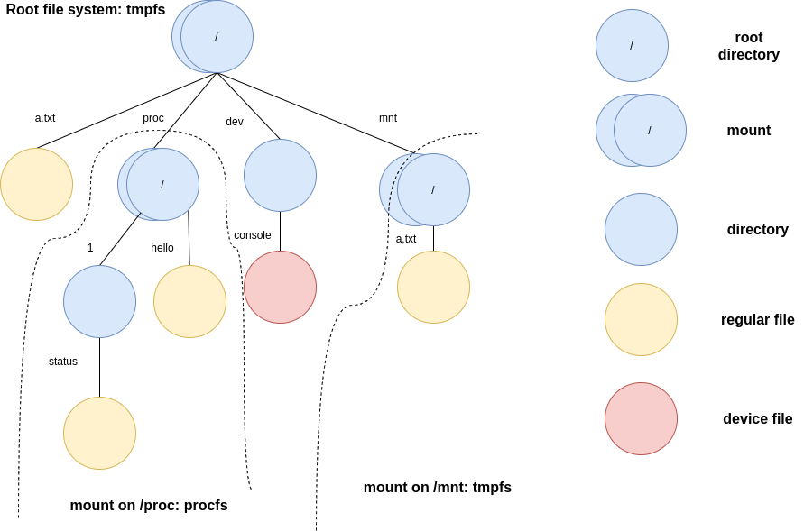

Lab 6 : Virtual File System¶
Introduction¶
A file system manages data in storage mediums. Each file system has a specific way to store and retrieve the data. Hence, a virtual file system(VFS) is common in general-purpose OS to provide a unified interface for all file systems.
In this lab, you’ll implement a memory-based file system(tmpfs) to get familiar with the concept of VFS. In the next lab, you’ll implement the FAT32 file system to access files from an SD card. It’s recommended to do both together.
Goals of this lab¶
Understand how to set up a root file system.
Understand how to create, open, close, read, and write files.
Understand how a user process access files through the virtual file system.
Understand how to mount a file system and look up a file across file systems.
Understand how to design the procfs.
Background¶
Tree Structure¶
A file system is usually hierarchical, so a tree is a suitable data structure to represent it.
Each node represents an entity such as a file or directory in the file system.
Each edge has its name, and it’s stored in the directory entry.
There is one path between two nodes. Concatenating all the edges’ names on the path forms a pathname to the file or directory. Then, the VFS parses the pathname to find the target file or directory.
Example graph
Terminology¶
File System¶
In this documentation, a file system refers to a concrete file system type such as tmpfs, FAT32, etc. The virtual file system will be shortened as VFS.
Vnode¶
A vnode is an abstract class in the VFS tree. The underlying file system implements the methods and creates the instances. Then, users can access files and directories with a unified interface.
Component Name¶
A pathname delimits each name by ‘/’. We call each separated name component name.
File Handle¶
A file in the file system can be opened by multiple processes. The VFS should maintain a data structure for each opened file, so information such as the current position for the next read/write operation can be kept individually. We call the data structure file handle.
Required¶
Requirement 1¶
In this part, you need to implement the interfaces of the VFS. Then, you should follow the interfaces to implement a memory-based file system, tmpfs. Finally, you should mount the tmpfs as the root file system and populate the root file system with the initramfs.
Note
If you only want to finish the required part, you can assume that the root file system contains no subdirectory and no other mounted file system.
Mount the Root File System¶
The VFS should provide an API for users to choose the file system(e.g. tmpfs in this lab or FAT32 in the next lab) as the root file system. Since each file system has its initialization method, the VFS should provide another interface for each file system to register its method. Then, the user can specify the file system’s name to mount the root file system.
Note that, each file system should have a root directory, and the VFS uses the root directory’s vnode to look up a file. Hence, the file system should also create a vnode for its root directory.
Open(Create) and Close a File¶
The VFS should provide an API for users to open a file with the pathname. The VFS then tries to find the vnode of the file in the mounted file system.
However, the VFS doesn’t know the implementation of the underlying file system. Hence, the VFS iteratively passes the component name to the current vnode to get the next vnode.
The underlying file system creates and initializes the vnode, so the vnode should have the method to look up the next level vnode. Therefore, the VFS can get the vnode of the file if it exists. Then, the VFS returns the file handle to the caller.
To create a non-existing file, the user should be able to use the flag of the open-file API to create a file. Then, the underlying file system uses its method to create the file with the component name in the directory.
Read and Write a File¶
The VFS should provide APIs for users to read or write the opened file. When the user calls the API, the VFS should call the file’s corresponding method so each file system can have its way to read/write a file.
After the underlying file system reads or writes the file, it should update the file’s size and the file handle’s current position if needed. Note that, the file handle’s current position should not exceed its size. Hence, once a file handle reaches its end of file(EOF) in a read operation, it should stop there, and return the number of bytes it read.
Populate the Root File System¶
When the user uses the initramfs to set up the system, the kernel can mount the root file system using the tmpfs. Next, it populates the root file system with the content of the initramfs. Then, it can use the user program inside the initramfs to set up the remaining system.
required 1 Populate the root file system with initramfs using the VFS APIs and the tmpfs.
Example VFS Code¶
The following code provides concrete APIs and interfaces. You don’t have to follow it, but it provides a good starting point.
struct vnode {
struct mount* mount;
struct vnode_operations* v_ops;
struct file_operations* f_ops;
void* internal;
};
struct file {
struct vnode* vnode;
size_t f_pos; // The next read/write position of this opened file
struct file_operations* f_ops;
int flags;
};
struct mount {
struct vnode* root;
struct filesystem* fs;
};
struct filesystem {
const char* name;
int (*setup_mount)(struct filesystem* fs, struct mount* mount);
};
struct file_operations {
int (*write) (struct file* file, const void* buf, size_t len);
int (*read) (struct file* file, void* buf, size_t len);
};
struct vnode_operations {
int (*lookup)(struct vnode* dir_node, struct vnode** target, const char* component_name);
int (*create)(struct vnode* dir_node, struct vnode** target, const char* component_name);
};
struct mount* rootfs;
int register_filesystem(struct filesystem* fs) {
// register the file system to the kernel.
}
struct file* vfs_open(const char* pathname, int flags) {
// 1. Lookup pathname from the root vnode.
// 2. Create a new file descriptor for this vnode if found.
// 3. Create a new file if O_CREAT is specified in flags.
}
int vfs_close(struct file* file) {
// 1. release the file descriptor
}
int vfs_write(struct file* file, const void* buf, size_t len) {
// 1. write len byte from buf to the opened file.
// 2. return written size or error code if an error occurs.
}
int vfs_read(struct file* file, void* buf, size_t len) {
// 1. read min(len, readable file data size) byte to buf from the opened file.
// 2. return read size or error code if an error occurs.
}
Requirement 2¶
As mentioned in the previous lab, each user process should be isolated and has its resource. Hence, the kernel should maintain a per-process data structure and provide system calls for accessing the file system.
File Descriptor Table¶
Each process should have a file descriptor table to bookkeep the opened files. When the user opens a file, the kernel creates a file handle in the table and returns the index(file descriptor) to the user. After that, the user can pass the file descriptor to the kernel to get the file handle. Then, the kernel calls the corresponding VFS API using the file handle and return the result to the user.
System Calls¶
You need to provide the following system calls so a user process can access the file system.
int open(const char *pathname, int flags);
int close(int fd);
int write(int fd, const void *buf, int count);
int read(int fd, void *buf, int count);
Test¶
Please test your implementation with the following code or equivalent logic code in the demo.
Expected result: Print Hello World!.
int a = open("hello", O_CREAT);
int b = open("world", O_CREAT);
write(a, "Hello ", 6);
write(b, "World!", 6);
close(a);
close(b);
b = open("hello", 0);
a = open("world", 0);
int sz;
sz = read(b, buf, 100);
sz += read(a, buf + sz, 100);
buf[sz] = '\0';
printf("%s\n", buf); // should be Hello World!
required 2 Implement the file descriptor table and the system calls so user processes can access the file system.
Elective¶
Read a Directory¶
A directory can have multiple entries to other files or subdirectories.
In this part, you need to implement the APIs to iterate the directory entries of the opened directory.
Next, implement the system calls.
Finally, implement the ls <directory> user program to list the target directory.
ls.c
int main(int argc, char** argv) {
int fd = open(argv[1], 0);
char name[100];
int size;
// Modify the for loop to iterate the directory entries of the opened directory.
for(;;) {
printf("Name: %s Size: %d\n", name, size);
}
}
elective 1 Implement the ls <directory> program to list the target directory.
Multi-levels VFS¶
In the required part, the VFS contains only the root directory and files under it. Now, your VFS should be able to
Create subdirectories.
Change the current working directory.
Mount file systems on directories.
Look up the vnode with its full pathname.
Create a Directory¶
Creating a directory is almost the same as creating a regular file. The VFS should find the parent directory of a newly created directory first. If the parent directory is found, the VFS calls the file system’s method with the component name to create a new directory.
Change the Directory¶
With the levels of the VFS tree increased, it’s inefficient to specify the pathname starting from the root vnode. Hence besides the root vnode, the VFS should also keep the per-process current working directory vnode. Then, the user can specify the pathname starting from the current working directory to shorten the pathname.
Mount Another File System¶
You should implement the following API to mount a file system.
- int mount(const char* device, const char* mountpoint, const char* filesystem)
filesystem is the file system’s name.
The VFS should find and call the file system’s method to set up the mount.
device is a name that,
For device-based file systems, the name should be a pathname of a device file that stores a file system.
For memory-based file systems, the name can be used as the name for the mounted file system.
mountpoint is the directory’s pathname to be mounted on.
You should also implement the following API to unmount a file system.
- int umount(const char* mountpoint)
mountpoint is the directory’s pathname with a file system mounted on.
Pathname Lookup¶
As mentioned in the background section, a pathname lookup is simply traversing the vnodes. The VFS can use the following step to find the target file or directory.
Start from one vnode.
Get the next component name.
Get the next vnode by the next component name using the current vnode’s method.
Go to the next vnode.
Repeat 2-4; the VFS can reach the target vnode if it exists.
Absolute vs. Relative Pathname¶
A pathname starts with ‘/’ is an absolute pathname. The lookup starts at the root directory vnode.
Otherwise, it’s a relative pathname. The lookup starts at the current working directory vnode.
Dot Component Name¶
“.” and “..” are special component names.
“.” refers to the current directory.
“..” refers to the parent directory.
Cross the Mountpoint¶
A pathname lookup crosses a mountpoint in the following case.
The current directory is the root of a file system, and the next component name is “..”
The next component name is a mountpoint.
In the first case, if the current directory is also the root of the VFS, the VFS can just stay at the root directory vnode. Otherwise, the file system is mounted on another file system’s mountpoint. The VFS should go to the parent directory vnode of the mountpoint.
In the second case, the VFS should go to the mounted file system’s root directory vnode instead of the mountpoint’s vnode.
Test¶
Please test your implementation with the following code or equivalent logic code in the demo.
test.c
int main() {
char buf[8];
mkdir("mnt");
int fd = open("/mnt/a.txt", O_CREAT);
write(fd, "Hi", 2);
close(fd);
chdir("mnt");
fd = open("./a.txt", 0);
assert(fd >= 0);
read(fd, buf, 2);
assert(strncmp(buf, "Hi", 2) == 0);
chdir("..");
mount("tmpfs", "mnt", "tmpfs");
fd = open("mnt/a.txt", 0);
assert(fd < 0);
umount("/mnt");
fd = open("/mnt/a.txt", 0);
assert(fd >= 0);
read(fd, buf, 2);
assert(strncmp(buf, "Hi", 2) == 0);
}
elective 2 Implement multi-levels VFS and pass the test.
Procfs¶
Even if a piece of code has nothing to do with data storage, as long as it implements the VFS’s interfaces, it can be mounted by the VFS.
Procfs is one of the examples. It’s used in UNIX-like operating to expose the states of the kernel and the processes. In this part, you need to implement it so user processes can access the kernel’s internal states.
Read and Write the Kernel’s States¶
In the procfs, the kernel’s states are retrieved/modified by reading/writing the corresponding files. Here, you can practice the concept by creating switch and hello files.
Reading hello always gets the string “hello”.
The content of switch can change the letter case of hello.
Writing “0” to switch, the content of hello becomes “hello”.
Writing “1” to switch, the content of hello becomes “HELLO”.
elective 3-1 The procfs creates switch and hello file in its root directory. Users can access them by open, read, and write.
Get Per-process States¶
Creating the files and directories of per-process states ahead of time is not a good idea because the process’s states are updated consistently. Hence, they should be lazily created and updated until someone accesses them.
Then, the procfs should
Get the information from the process subsystem.
Create/Delete process’s directory in procfs.
Create/Update process’s related files.
elective 3-2 The procfs lazily updates the per-process directories and files. Users can read process’s status by reading <process's id>/status
Note
The procfs should still follow the VFS interface, but the lookup/read/write methods could be specialized for different vnodes.
Test¶
Please test your implementation with the following code or equivalent logic code in the demo.
proc.c
int main() {
char buf[16];
mkdir("proc");
mount("procfs", "proc", "procfs");
int fd = open("/proc/switch", 0);
write(fd, "0", 1);
close(fd);
fd = open("/proc/hello", 0);
int sz = read(fd, buf, 16);
buf[sz] = '\0';
printf("%s\n", buf); // should be hello
close(fd);
fd = open("/proc/switch", 0);
write(fd, "1", 1);
close(fd);
fd = open("/proc/hello", 0);
sz = read(fd, buf, 16);
buf[sz] = '\0';
printf("%s\n", buf); //should be HELLO
close(fd);
fd = open("/proc/1/status", 0); // choose a created process's id here
sz = read(fd, buf, 16);
buf[sz] = '\0';
printf("%s\n", buf); // process's status.
close(fd);
fd = open("/proc/999/status", 0); // choose a non-existed process's id here
assert(fd < 0);
}